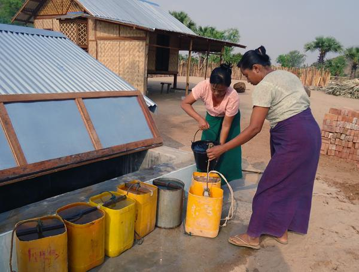
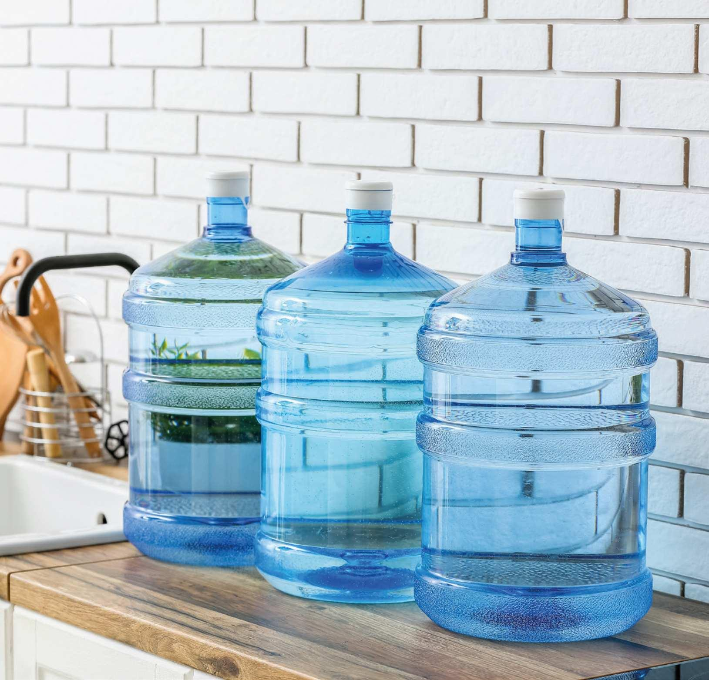

Identify water sources
Know where your household normally gets water, whether it is safe to drink and which alternatives are available if the regular supply is disrupted.
Drought and water shortages can affect household routines, agriculture and access to safe water. Learning what to prepare in advance helps families and communities respond more effectively when supplies become limited.

Drought preparedness means planning ahead to protect essential water needs before a shortage disrupts everyday life.
Families may depend on piped water, wells, rainwater systems or community water supplies. During prolonged dry conditions, the reliability of these sources may change. Knowing what water is available and where to find safe alternatives can reduce confusion.
Preparedness also includes maintaining clean storage containers, checking for leaks, following trustworthy announcements and discussing responsibilities. These actions cannot prevent drought, but they can make a household better prepared.
Know where your household normally gets water, whether it is safe to drink and which alternatives are available if the regular supply is disrupted.
Prioritise drinking, food preparation and hygiene. Keep suitable, clean water-storage containers ready.
Decide who checks water supplies, reports plumbing problems and communicates important information.
Review these ten practical preparations with your household. Tick each action once it has been completed. Use the checklist to identify what still needs attention.
Work through the items with your family. Discuss any incomplete actions and decide who can help with them.
Preparing enough water is important, but keeping it clean and protected matters just as much.

WATER STORAGE / HOUSEHOLD PREPARATIONSelect food-grade containers with secure lids. Never use containers previously used for fuel, pesticides or harmful chemicals.
Store drinking water away from direct sunlight, heat and harmful substances. Follow advice on cleaning and replacing stored water.
Keep containers closed and use clean utensils. Avoid placing dirty hands or cups inside them.
Water that looks clear is not always safe. Follow official advice about drinking-water sources, treatment and storage.
Important: Drinking water and water intended for cleaning or gardening have different safety requirements. Keep supplies clearly identified and separated.
Water shortages affect shared facilities as well as individual households. Clear responsibilities and early planning help protect essential services.
Staff can check drinking-water stations, taps, toilets and storage tanks before the dry season. Problems should be reported and repaired by responsible personnel.
Families and schools should know where to find water-supply notices and who shares important updates. Clear communication helps communities plan ahead.
Planning should consider people who may find it difficult to collect water, including older adults, people with disabilities and households with young children.
Prepare early and review your plan whenever water conditions or household circumstances change.
Identify water sources, check containers, inspect plumbing and agree on household responsibilities.
Check reliable information, review supplies and confirm arrangements for essential water needs.
Follow local guidance and update your plan if water sources or household needs change.
Learn how reducing unnecessary water use supports responsible management before shortages occur.